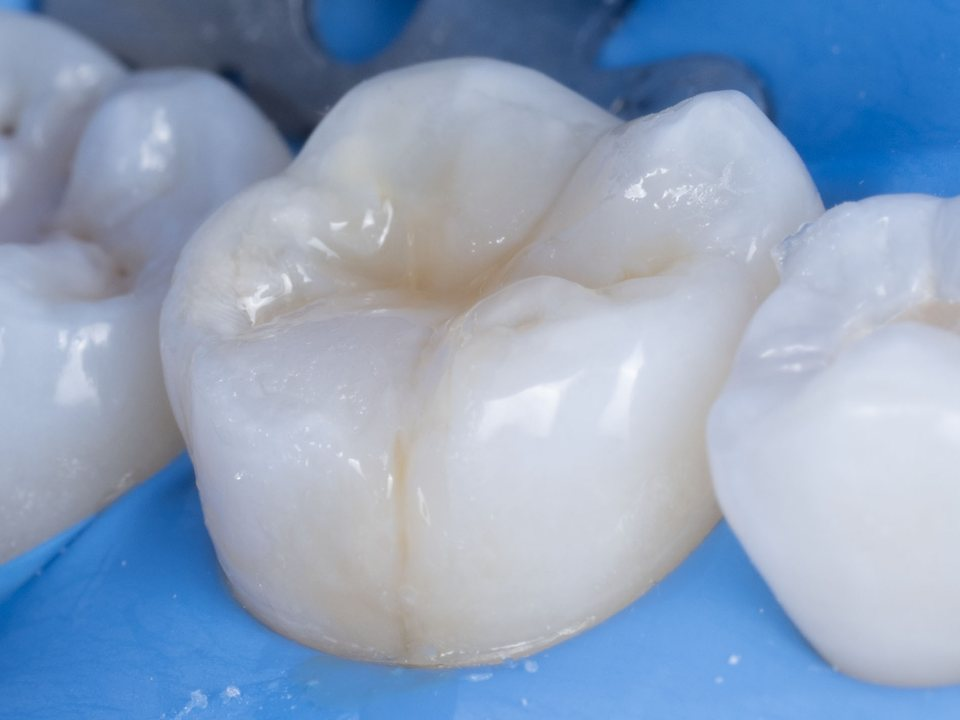
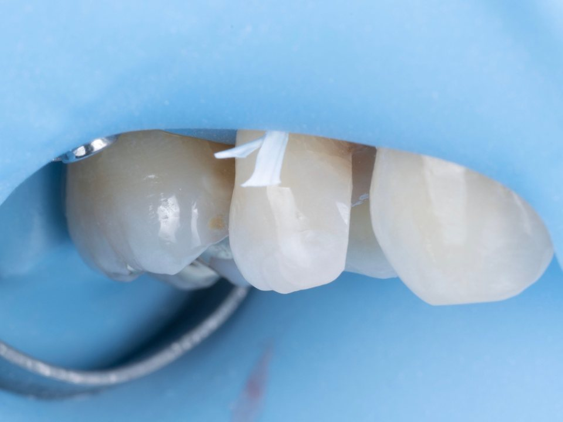
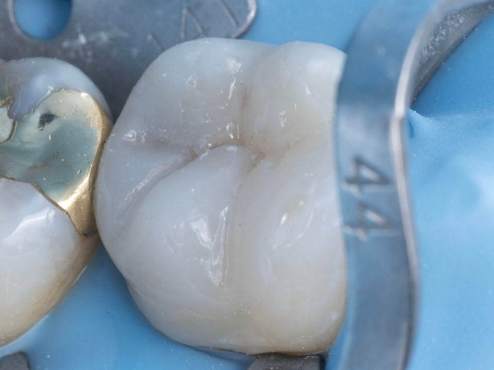
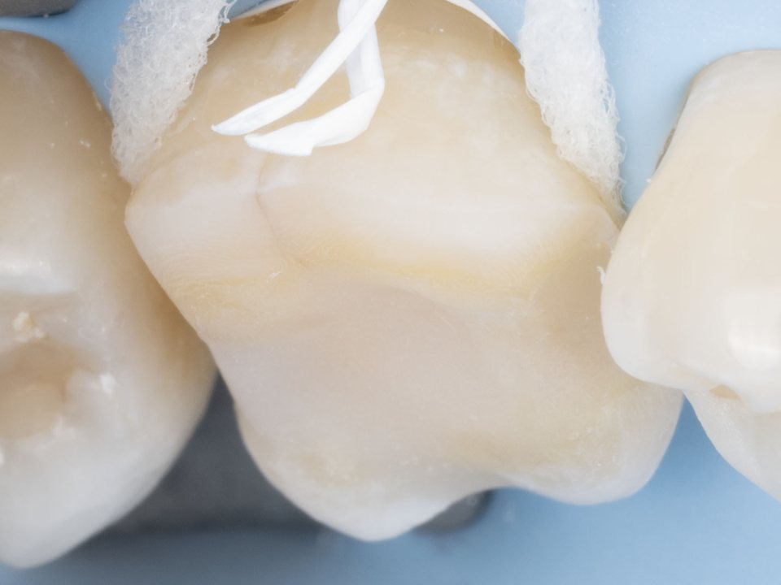

한눈에 보기
- 어떤 치료인가요
- 충치나 균열, 깨짐으로 손상된 치아를 필요한 만큼만 다듬고, 자연치아의 형태와 기능을 되살리는 수복 치료
- 치료 방법
- 손상 범위에 따라 레진 빌드업 → 인레이 → 온레이 → 오버레이 순으로 넓어지며, 크라운은 마지막 선택지로 둡니다. 모든 단계는 최소 삭제 원칙을 지키며, 러버댐으로 치아를 완전히 격리해 습기를 차단한 환경에서 강한 접착을 바탕으로 수복하는 생체모방 치료(Biomimetic concept)로 진행합니다.
- 원칙
- 정말 치료가 필요한지 먼저 진단하고, 가장 적게 깎는 방법부터 검토합니다.
- 담당 의료진
- 배민수 원장 (치과보철과 전문의, 치의학박사)
DIAGNOSIS FIRST
정말 치료가
필요한 치아일까요?
한 번 깎아 낸 치아는 되돌릴 수 없습니다. 색이 변해 보인다고 모두 충치는 아니며, 진행이 멈춘 충치나 표면의 착색은 치료하지 않고 지켜보는 것이 더 나을 때도 있습니다. 그래서 위드치과보철과는 치료할지 말지를 먼저 신중하게 진단합니다.
이때 항상 되뇌는 질문이 있습니다.
“이 치아가 내 치아라면 어떻게 할 것인가.”
치료가 필요한 충치는
놓치지 않습니다
반대로 진행 중인 충치는 시간이 지날수록 치아를 안쪽부터 무너뜨립니다. 작을 때 치료하면 레진처럼 간단하게 끝날 일이, 시기를 놓치면 신경치료나 크라운까지 필요해질 수 있습니다. 방사선 사진과 고배율 구강 사진으로 충치의 깊이와 미세한 균열까지 확인해, 필요한 시점에 필요한 만큼 치료합니다.
TREATMENT BY EXTENT
손상 범위에 따라,
가장 적게 깎는 방법부터
충치나 손상이 작을수록 치료도 작아집니다. 치아에 남아 있는 건강한 부분의 양과 씹는 힘을 받는 위치를 보고, 아래 네 단계 가운데 꼭 맞는 방법을 고릅니다. 크라운은 이 방법들로 지킬 수 없을 때 선택하는 마지막 방법입니다.
-

STEP 1 · 직접 수복 레진 빌드업 작은 충치나 깨진 부위를 치아색 레진으로 한 층씩 쌓아 올려 바로 수복합니다. 가장 적게 깎는 방법이며, 대부분 당일에 끝납니다. 충치가 작고 씹는 힘을 크게 받지 않는 부위 -

STEP 2 · 간접 수복 인레이 충치가 레진으로 메우기에는 넓을 때, 본을 떠서 정밀하게 제작한 수복물을 씹는 면 가운데에 끼워 접착합니다. 씹는 면 가운데와 치아 사이까지 넓어진 충치 -

STEP 3 · 간접 수복 온레이 약해진 교두(씹는 면의 뾰족한 부분)까지 덮어, 씹을 때 치아가 쪼개지지 않도록 보호합니다. 크라운보다 훨씬 적게 깎습니다. 교두 일부가 얇아지거나 균열이 생긴 치아 -

STEP 4 · 간접 수복 오버레이 씹는 면 전체를 얇게 덮어 접착하는 방법입니다. 옆면의 건강한 치아는 남기면서도 치아 전체를 감싸 보호해, 크라운 대신 선택할 수 있습니다. 손상이 넓은 치아, 신경치료한 어금니
마지막 선택 · 크라운
치아 머리 전체를 깎아 씌우는 방법입니다. 남은 치아가 너무 적어 위의 방법으로 지킬 수 없을 때 선택합니다. 크라운이 필요한 경우에도 남길 수 있는 부분은 최대한 남겨 설계합니다.
NATURAL ANATOMY
메우는 것이 아니라,
자연치아의 형태를 되살리며 쌓아 나갑니다
치아 씹는 면의 굴곡과 홈에는 모두 이유가 있습니다. 음식을 자르고 으깨는 방향, 음식물이 빠져나가는 길, 위아래 치아가 맞물리는 자리가 이 형태로 정해집니다. 치과보철과 전문의가 교합을 함께 분석해, 겉모양뿐 아니라 씹는 기능까지 자연치아에 가깝게 복원합니다.
직접 수복 · 레진 적층
레진을 한 번에 채우지 않고 상아질과 법랑질의 층을 나누어 쌓아, 색과 형태를 자연스럽게 재현합니다. 신경치료한 치아도 상태에 따라 섬유 강화 레진으로 보강해 크라운 없이 수복하기도 합니다.
간접 수복 · 정밀한 적합
인레이·온레이·오버레이는 치아와 수복물 사이의 틈을 최소화하도록 정밀하게 맞춥니다. 경계가 잘 맞아야 세균이 스며들지 않고 오래 유지됩니다.
단단한 접착
수복물 안쪽과 치아 표면을 재료에 맞게 화학적으로 처리한 뒤 접착해, 치아와 수복물이 하나처럼 힘을 나누어 받도록 합니다.
1993
치료 후의 관리까지가 치료입니다
수복한 치아도 양치 습관과 정기 검진에 따라 수명이 달라집니다. 치료 직후 잠시 시린 느낌이 있을 수 있으며, 수복물 경계에 다시 충치가 생기거나 잇몸에 염증이 생기지 않는지 꾸준히 확인해야 합니다. 위드치과보철과는 1993년부터 같은 자리에서 가족이 대를 이어 진료하며, 치료한 치아를 오래도록 함께 지켜봅니다.
FAQ
자주 묻는 질문
레진으로 할지 인레이로 할지는 어떻게 정하나요?
충치를 제거한 뒤 남은 치아의 양과, 그 자리가 씹는 힘을 얼마나 받는지가 기준입니다. 범위가 작고 힘을 덜 받는 곳은 레진으로 충분하고, 범위가 넓거나 치아 사이까지 이어진 경우에는 정밀하게 제작한 인레이가 더 오래 안정적입니다.
오버레이와 크라운은 무엇이 다른가요?
크라운은 치아를 사방으로 깎아 전체를 씌우고, 오버레이는 씹는 면 위주로 얇게 덮어 접착합니다. 오버레이는 옆면의 건강한 치아를 남길 수 있어 치아를 덜 깎고, 나중에 다시 치료가 필요할 때도 선택지가 남습니다.
신경치료를 하면 꼭 크라운을 씌워야 하나요?
꼭 그렇지는 않습니다. 신경치료한 어금니는 약해져 보호가 필요하지만, 남은 치아가 충분하다면 오버레이나 보강한 레진으로 크라운보다 적게 깎고 보호할 수 있습니다. 남은 치아의 양과 균열 여부를 보고 결정합니다.
치료 후에 이가 시릴 수 있나요?
충치가 깊었던 경우 치료 후 며칠에서 몇 주 동안 차가운 것이나 씹을 때 시린 느낌이 있을 수 있습니다. 대부분 시간이 지나며 줄어들지만, 점점 심해지거나 오래 이어지면 내원해 확인받으시는 것이 좋습니다.
예전에 한 금 인레이나 크라운을 다시 해야 하나요?
오래된 수복물이라도 경계가 잘 맞고 아래에 충치가 없다면 바꿀 필요가 없습니다. 경계가 벌어졌거나 그 아래로 충치가 생긴 경우에는 다시 치료하며, 이때도 가능한 한 적게 깎는 방법부터 검토합니다.
꼭 필요한 치료만,
남길 수 있는 치아는 최대한.
위드치과보철과는 예약제로 운영됩니다.